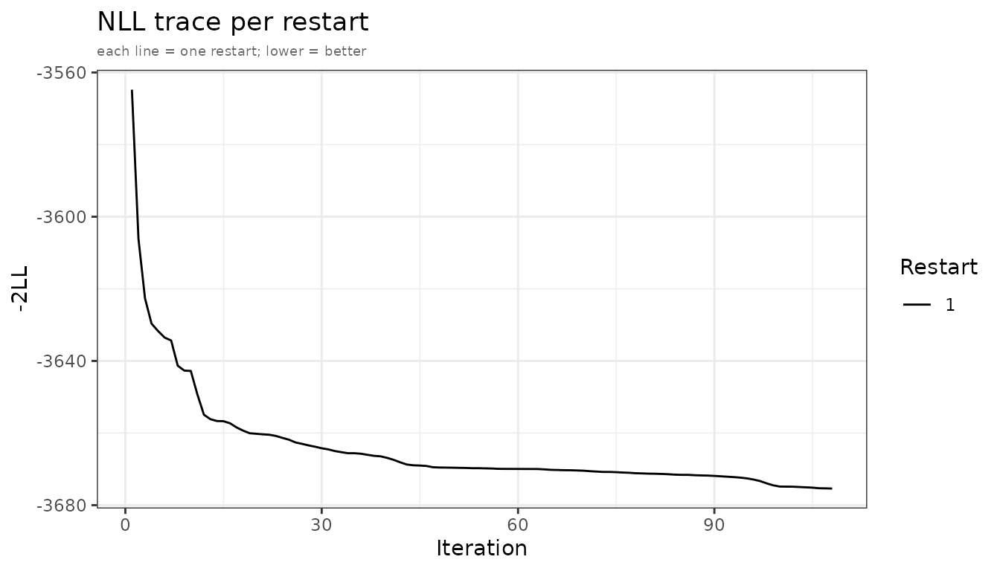

Estimator comparison: adfo, admc and adirmc
Source:vignettes/estimator-comparison.Rmd
estimator-comparison.RmdThree estimators, one interface
All three estimators accept the same model and study specification
and return the same admFit object. They share a common
likelihood framework but differ in how they approximate the population
mean and covariance of the predicted observations.
The shared integration problem
For each study the observed data are a mean vector and a covariance matrix computed from subjects. Under a multivariate normal approximation the aggregate log-likelihood is
where and are the model-predicted population mean and covariance of the observations. For a nonlinear model these are integrals over the random-effects distribution :
These integrals have no closed form for nonlinear . All three estimators minimise the same objective but take different approaches to evaluating them.
First-Order (FO): Taylor expansion at
adfo sidesteps the integral entirely by approximating
with its first-order Taylor expansion around
:
Substituting into the population moments gives closed-form expressions:
The Jacobian
is obtained in a single rxSolve call via sensitivity equations that
augment the ODE system with
— no finite differences, no extra solves per eta. This makes
adfo the fastest estimator: one rxSolve per NLL evaluation,
fully deterministic.
When the approximation holds: the Taylor expansion is exact when is linear in . For nonlinear models or large IIV the true population covariance exceeds ; FO underestimates and bias grows with the degree of nonlinearity.
AIC note: adfo evaluates a linearised
likelihood. Its objective is not on the same scale as admc
or adirmc and must not be used for cross-estimator AIC
comparisons.
Monte Carlo (MC): sample average over
admc estimates the population integrals directly by
drawing
samples
and computing sample moments:
No approximation is made to itself — the estimator is asymptotically exact as . Sobol quasi-random sequences (default) reduce MC variance relative to plain normal draws, typically requiring 2–5× fewer samples for equivalent precision.
The key cost is that every NLL evaluation requires rxSolve calls — one per sample. The analytical gradient (sensitivity equations for mu-referenced parameters; common random numbers FD otherwise) adds no further solves, but the base cost per optimizer step remains (cost of one rxSolve).
Advantages:
- Asymptotically exact; AIC directly comparable across
admcfits. - Works well for standard 1–2 compartment PK models with moderate IIV.
Limitations:
- Each NLL evaluation requires
rxSolve calls; slower than
adfo. - MC noise in the gradient can cause optimiser oscillation at low
n_sim.
Iterative Reweighting MC (IRMC): proposals fixed, inner loop free
adirmc addresses the main bottleneck of
admc — the need for
new rxSolve calls at every optimizer step — by decoupling
proposal generation from optimization.
At each outer phase, proposals are drawn once and held fixed for the entire inner optimization. Given fixed proposals, evaluating the NLL requires only matrix operations — no new rxSolve calls. The proposals are reweighted by their likelihood under the current so that the inner objective remains a valid approximation as parameters move:
The inner optimizer therefore runs to convergence at negligible cost; proposals are refreshed only between phases. Box constraints on the parameters are progressively tightened across phases to guide global convergence.
This decoupling makes adirmc particularly well-suited to
complex ODE models where each rxSolve is expensive: the
total number of solves scales with the number of phases rather than the
number of optimizer steps. It is also more robust to poor starting
values because the inner optimisation is deterministic and does not
depend on re-sampling.
Advantages:
- Far fewer rxSolve calls per optimizer step than
admc— especially beneficial for complex ODE systems with expensive solves. - Robust to poor starting values; deterministic inner loop.
- AIC directly comparable to
admc.
Limitations:
- Heavier per-phase overhead than
admcfor simple, well-initialised problems with cheap ODE solves.
Common setup
library(admixr2)
library(rxode2)
library(nlmixr2)
library(ggplot2)
data("examplomycin")
obs <- examplomycin[examplomycin$EVID == 0, ]
obs <- obs[order(obs$ID, obs$TIME), ]
times <- sort(unique(obs$TIME))
ids <- unique(obs$ID)
n <- length(ids)
dv_mat <- matrix(NA_real_, nrow = n, ncol = length(times))
for (i in seq_along(ids)) {
sub <- obs[obs$ID == ids[i], ]
dv_mat[i, ] <- sub$DV[order(sub$TIME)]
}
E <- colMeans(dv_mat)
V <- cov.wt(dv_mat, method = "ML")$cov
pk_model <- function() {
ini({
tcl <- log(5) ; label("Log clearance (L/hr)")
tv1 <- log(10) ; label("Log central volume (L)")
tv2 <- log(30) ; label("Log peripheral volume (L)")
tq <- log(10) ; label("Log inter-compartmental CL (L/hr)")
tka <- log(1) ; label("Log absorption rate constant (1/hr)")
prop.sd <- c(0, 0.2); label("Proportional residual error SD")
eta.cl ~ 0.09
eta.v1 ~ 0.09
eta.v2 ~ 0.09
eta.q ~ 0.09
eta.ka ~ 0.09
})
model({
cl <- exp(tcl + eta.cl)
v1 <- exp(tv1 + eta.v1)
v2 <- exp(tv2 + eta.v2)
q <- exp(tq + eta.q)
ka <- exp(tka + eta.ka)
d/dt(depot) <- -ka * depot
d/dt(central) <- ka * depot - (cl/v1 + q/v1) * central + (q/v2) * peripheral
d/dt(peripheral) <- (q/v1) * central - (q/v2) * peripheral
cp <- central / v1
cp ~ prop(prop.sd)
})
}
study <- list(E = E, V = V, n = n, times = times, ev = rxode2::et(amt = 100))The model uses mu-referenced parameterisation
(cl <- exp(tcl + eta.cl)), which enables analytical
gradient computation via sensitivity equations in all three estimators.
See the Advanced
usage vignette for details.
Fitting with adfo
adfo is the fastest estimator and a natural starting
point for model screening or obtaining initial estimates for MC
refinement.
fit_fo <- nlmixr2(
pk_model, admData(), est = "adfo",
control = adfoControl(
studies = list(examplomycin = study),
maxeval = 500L,
seed = 1L
)
)Fitting with admc
fit_mc <- nlmixr2(
pk_model, admData(), est = "admc",
control = admControl(
studies = list(examplomycin = study),
n_sim = 5000L,
cov_n_sim = 10000L,
maxeval = 300L,
seed = 1L
)
)
#> [====|====|====|====|====|====|====|====|====|====] 0:00:07Fitting with adirmc
adirmc is slower per evaluation but more robust to poor
starting values and high-dimensional
.
The settings below are tuned for a fast vignette build; increase
n_sim for production use.
fit_irmc <- nlmixr2(
pk_model, admData(), est = "adirmc",
control = adirmcControl(
studies = list(examplomycin = study),
n_sim = 2000L,
phases = c(2, 1, 0.5, 0.1),
cov_n_sim = 10000L,
omega_expansion = 1.5,
seed = 1L
)
)Comparing parameter estimates
adfo and admc should recover values close
to the true parameters (CL = 5, V1 = 10, V2 = 30, Q = 10, ka = 1; IIV
variance = 0.09 for all; prop.sd = 0.2). For the examplomycin dataset
IIV is moderate and the model is near-linear in
,
so FO bias is small.
get_pars <- function(fit) {
s <- fit$env$admExtra$struct
om <- diag(fit$env$admExtra$omega)
sg <- sqrt(unlist(fit$env$admExtra$sigma_var))
c(exp(s), om, sg)
}
tbl <- data.frame(
Parameter = c(
paste0("exp(", names(fit_fo$env$admExtra$struct), ")"),
paste0("var(", fit_fo$env$admExtra$eta_col_names, ")"),
"prop.sd"
),
True = c(5, 10, 30, 10, 1, rep(0.09, 5), 0.2),
adfo = round(get_pars(fit_fo), 4),
admc = round(get_pars(fit_mc), 4)
)
knitr::kable(tbl, caption = "Parameter estimates vs true values")| Parameter | True | adfo | admc |
|---|---|---|---|
| exp(tcl) | 5.00 | 4.9305 | 4.9583 |
| exp(tv1) | 10.00 | 7.5125 | 10.1172 |
| exp(tv2) | 30.00 | 31.7752 | 30.0312 |
| exp(tq) | 10.00 | 10.3718 | 9.8217 |
| exp(tka) | 1.00 | 0.8336 | 1.0245 |
| var(eta.cl) | 0.09 | 0.0972 | 0.1022 |
| var(eta.v1) | 0.09 | 0.1309 | 0.1080 |
| var(eta.v2) | 0.09 | 0.0728 | 0.0975 |
| var(eta.q) | 0.09 | 0.1015 | 0.1056 |
| var(eta.ka) | 0.09 | 0.0872 | 0.0928 |
| prop.sd | 0.20 | 0.1998 | 0.1984 |
Comparing objectives
admc and adirmc evaluate the same
likelihood and their -2LL values are directly comparable.
adfo evaluates a linearised likelihood — its objective is
on a different scale and must not be compared with MC
objectives or used for cross-estimator AIC:
cat(sprintf("adfo -2LL = %.2f AIC = %.2f\n", fit_fo$objective, AIC(fit_fo)))
#> adfo -2LL = -3675.39 AIC = -3653.39
cat(sprintf("admc -2LL = %.2f AIC = %.2f\n", fit_mc$objective, AIC(fit_mc)))
#> admc -2LL = -3690.84 AIC = -3668.84Use AIC only within the same estimator for model selection.
NLL convergence traces
plots_fo <- plot(fit_fo, which = "nll")
adfo and admc NLL convergence traces.
plots_mc <- plot(fit_mc, which = "nll")
adfo and admc NLL convergence traces.
For adirmc, the NLL trace reflects outer phase
iterations rather than individual LBFGS steps. Jumps between phases (as
box constraints tighten) are normal and expected.
When to use each
| Situation | Recommendation |
|---|---|
| Rapid model screening, many candidate models |
adfo — fastest per evaluation |
| Initial estimates before MC refinement |
adfo then hand off to admc
|
| Weak IIV (CV < 20 %) and near-linear model |
adfo estimates reliable for inference |
| Standard 1–2 compartment PK, good starting values |
admc with grad = "sens"
|
| Initial exploration or poor starting values |
admc with n_restarts >= 3
|
| Complex ODE system with expensive solves |
adirmc — inner loop needs no new rxSolve calls |
| High-dimensional Omega (≥ 5 etas) |
adirmc — inner loop scales with phases not steps |
| Non-Gaussian or bounded IIV |
adirmc with omega_expansion > 1
|
| Need exact likelihood for AIC comparison across models |
admc or adirmc (not
adfo) |
| Maximum reproducibility | All three estimators accept seed
|
Control objects at a glance
# adfo key arguments (fastest; linearised likelihood)
adfoControl(
studies = list(...),
grad = "none", # "none" (BOBYQA), "analytical", "fd", "cfd"
maxeval = 500L,
n_restarts = 1L,
covMethod = "r", # SEs for struct+sigma only; omega SEs are not computed
seed = 1L
)
# admc key arguments
admControl(
studies = list(...),
n_sim = 5000L, # MC sample count
grad = "sens", # gradient mode: "sens", "fd", "cfd", "none"
n_restarts = 1L, # number of optimizer restarts
workers = 1L, # parallel workers for restarts
covMethod = "r", # SEs for struct+sigma only; omega SEs are not computed
seed = 1L
)
# adirmc key arguments
adirmcControl(
studies = list(...),
n_sim = 5000L,
phases = c(2, 1, 0.5, 0.1), # box constraint half-widths per phase
omega_expansion = 1.5, # inflate proposal Omega
grad = "analytical", # "analytical", "none", "fd"
kappa_method = "exact", # "exact" (default) or "linearized"
seed = 1L
)